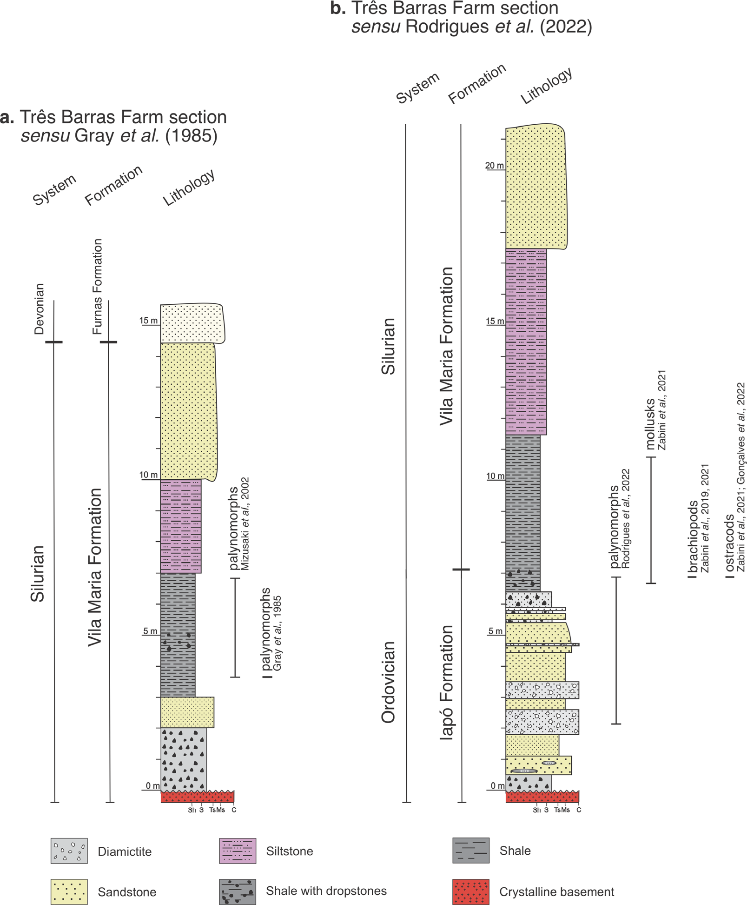

Geological Heritage of the Três Barras Farm section, Ordovician-Silurian record in the Paraná Basin, Brazil.

Resumo em Português
A seção da Fazenda Três Barras é um afloramento localizado na borda norte da Bacia do Paraná, no Centro-Oeste do Brasil. Rochas do período Ordoviciano-Siluriano são encontradas nessa seção, representadas pelas formações Iapó e Vila Maria do Grupo Rio Ivaí, que repousam diretamente sobre o embasamento cristalino. Rochas devonianas da Formação Furnas são também visíveis no topo da seção. Embora os primeiros trabalhos de campo tenham sido realizados em 1985, o sítio tem sido visitado por múltiplas gerações de pesquisadores, frequentemente para estudos paleontológicos.O registro fossilífero da seção inclui invertebrados como moluscos e braquiópodes, microfósseis mineralizados como ostracodes e palinomorfos como acritarcas e criptósporos. Análises conduzidas até os anos 2000 sugeriam idade Siluriana Inferior para os estratos completos da Formação Vila Maria, sem registro de fósseis de invertebrados. Estudos recentes, no entanto, desafiaram a idade siluriana anteriormente atribuída, com ostracodes e braquiópodes fósseis indicando idade Hirnanticiana para as porções superiores da Formação Iapó e inferiores da Formação Vila Maria. Pesquisas palinológicas recentes também reportaram pela primeira vez a presença de palinomorfos na Formação Iapó, apoiando interpretações de paleoambiente pós-glacial. Apesar desses avanços, lacunas significativas de conhecimento permanecem quanto à paleobiodiversidade das formações Iapó e Vila Maria, particularmente considerando descobertas recentes na Fazenda Três Barras.Esse sítio, localizado em área remota, preserva a transição dos estratos do Ordoviciano Superior para o Siluriano Inferior, permitindo estudos sobre a especiação no Paleozoico Inferior e sobre o impacto de uma grande glaciação na biota. As medidas de preservação incluem o compartilhamento de direções e rotas mapeadas até a seção, bem como a sensibilização da comunidade não científica sobre sua importância.